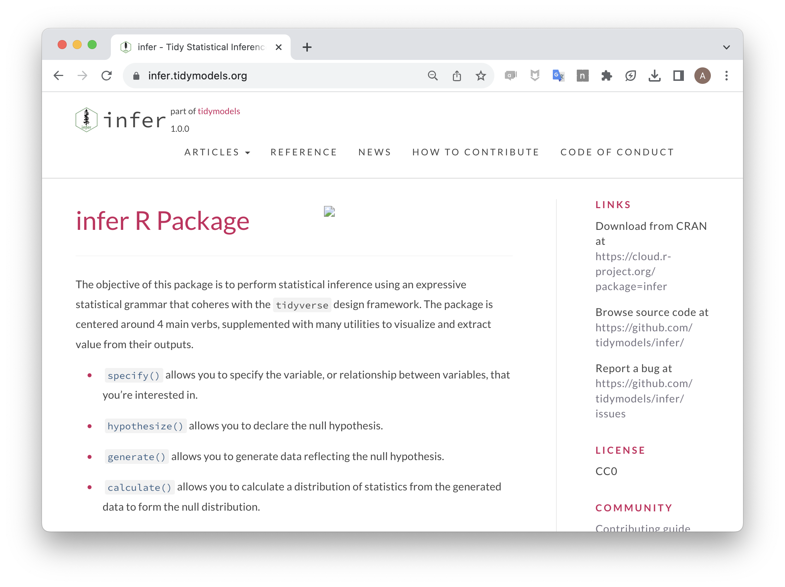

Code
countdown::countdown(1, top = 0)01:00
If you’ve been given an index card, please write on it:
As students arrive, randomly give ~8 of them an index card.
infer
Which of these is a valid bootstrap sample?
countdown::countdown(1, top = 0)01:00
library(kableExtra)
kable(a, caption = "Original Sample")| name | species | length |
|---|---|---|
| Gus | Chinstrap | 50.7 |
| Luz | Gentoo | 48.5 |
| Ida | Chinstrap | 52.8 |
| Ola | Gentoo | 44.5 |
| Abe | Adelie | 42.0 |
a |>
slice_sample(prop = 1, replace = T) |>
kable(caption = "BS A")| name | species | length |
|---|---|---|
| Ida | Chinstrap | 52.8 |
| Luz | Gentoo | 48.5 |
| Abe | Adelie | 42.0 |
| Ola | Gentoo | 44.5 |
| Ida | Chinstrap | 52.8 |
a |>
slice_sample(n = 6, replace = T) |>
kable(caption = "BS B")| name | species | length |
|---|---|---|
| Ola | Gentoo | 44.5 |
| Gus | Chinstrap | 50.7 |
| Ida | Chinstrap | 52.8 |
| Luz | Gentoo | 48.5 |
| Gus | Chinstrap | 50.7 |
| Gus | Chinstrap | 50.7 |
names_b <- a |>
slice_sample(prop = 1, replace = T) |>
pull(name)
a |>
mutate(name = names_b) |>
kable(caption = "BS C")| name | species | length |
|---|---|---|
| Gus | Chinstrap | 50.7 |
| Ola | Gentoo | 48.5 |
| Ola | Chinstrap | 52.8 |
| Ida | Gentoo | 44.5 |
| Ida | Adelie | 42.0 |
a |>
slice_sample(prop = 1, replace = T) |>
kable(caption = "BS D")| name | species | length |
|---|---|---|
| Gus | Chinstrap | 50.7 |
| Abe | Adelie | 42.0 |
| Gus | Chinstrap | 50.7 |
| Gus | Chinstrap | 50.7 |
| Gus | Chinstrap | 50.7 |
Our Goal: Assess the sampling error / variability in our estimate of the median year at Cal and the proportion of students in an econ-related field.
. . .
Our Tool: The Bootstrap
If you’ve been given an index card, please write on it:
boardwork
Collect index cards from students and record the data into a data frame on the board labelled “Observed sample”. Calculate the sample median and sample proportion of econ-related majors.
Ask for a volunteer to generate the first bootstrap sample. Hand them the stack of cards and have them randomly choose a single card and read off the data to you. As they do so, write out the first row of a “Bootstrap Sample 1” data frame on the board. Be sure to label the row with the student name - that helps emphasis when there are repeats.Have them return the card to the deck, shuffle, and randomly choose a card and read off the data. Repeat until you have filled out the same number of rows as in the original data set. Calculate the median and proportion (you may want to write dplyr code to do this using summarize()).
Ask for a second volunteer to generate the second bootstrap sample. Repeat the procedure as before, drawing a third data frame on the board and computing a second set of statistics (median and proportion).
Collect the bootstrapped medians and proportions and sketch them as the first few points in a broader density plot that we’ll be able to see when we take more and more bootstrap samples. Label this as the “bootstrap distribution” and speak of it as an approximation to the true sampling distribution. You can explain the 1 - alpha bootstrap interval as the interval that captures the middle 95% of bootstrapped statistics.
countdown::countdown(20)20:00
Let’s consider our 344 penguins to be a SRS from the broader population of Antarctic penguins. What is a point and interval estimate for the population proportion of penguins that are Adelie?
library(tidyverse)
library(palmerpenguins)
data(penguins). . .
. . .
Response: is_adelie (factor)
# A tibble: 344 × 2
# Groups: replicate [1]
replicate is_adelie
<int> <fct>
1 1 FALSE
2 1 FALSE
3 1 TRUE
4 1 FALSE
5 1 TRUE
6 1 TRUE
7 1 FALSE
8 1 TRUE
9 1 TRUE
10 1 TRUE
# ℹ 334 more rowsResponse: is_adelie (factor)
# A tibble: 344 × 2
# Groups: replicate [1]
replicate is_adelie
<int> <fct>
1 1 FALSE
2 1 TRUE
3 1 FALSE
4 1 FALSE
5 1 FALSE
6 1 TRUE
7 1 TRUE
8 1 FALSE
9 1 FALSE
10 1 FALSE
# ℹ 334 more rowsResponse: is_adelie (factor)
# A tibble: 344 × 2
# Groups: replicate [1]
replicate is_adelie
<int> <fct>
1 1 FALSE
2 1 TRUE
3 1 TRUE
4 1 FALSE
5 1 FALSE
6 1 TRUE
7 1 TRUE
8 1 FALSE
9 1 FALSE
10 1 FALSE
# ℹ 334 more rowsResponse: is_adelie (factor)
# A tibble: 9 × 2
replicate stat
<int> <dbl>
1 1 0.404
2 2 0.430
3 3 0.404
4 4 0.433
5 5 0.468
6 6 0.448
7 7 0.427
8 8 0.413
9 9 0.474. . .
Note the change in data frame size.
. . .
. . .
We can extract the middle 95% by identifying the .025 quantile and the .975 quantile of the bootstrap distribution with get_ci().
. . .
# A tibble: 1 × 2
lower_ci upper_ci
<dbl> <dbl>
1 0.392 0.494infer.tidymodels.org

Create a 95% confidence interval for the median bill length of penguins.
countdown::countdown(5, font_size = "2em")05:00